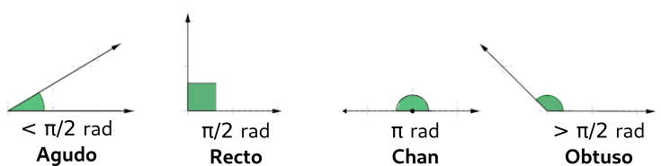

Trigonometría
Ángulos
Definición e partes
Unidades: graos sesaxesimais
Unidades: radiáns
[Exemplo] Convirte as unidades dos seguintes ángulos de radians a graos sesaxesimais e biceversa:
- 10º
- 80º
- π rad
- 4π/3 rad
1) Convirte as unidades dos seguintes ángulos de radians a graos sesaxesimais e biceversa:
- 30º
- 50º
- 3π/4 rad
- 3π/2 rad
Clasificación ángulos
Proporcionalidade
Magnitudes proporcionais
Cálculo de magnitudes proporcionais
[Exemplo] Completa a seguinte táboa:
| Magdalenas | 24 | 10 | ? |
| Fariña de trigo (g) | 350 | ? | 1000 |
2) Completa a seguinte taboa:
| Magdalenas | 24 | 67 | ? |
| Leite (ml) | 250 | ? | 1200 |
Razón de proporcionalidade
[Exemplo] Se a razón entre os litros de aceite necesarios e o número de magdalenas é de 240 (240 magdalenas/L de aceite), completa a seguinte táboa:
| Magdalenas | 65 | ? |
| Aceite (L) | ? | 0.5 |
3) Se a razón entre o número de ovos necesario e o número de magdalenas é de 8 (8 magdalenas/ovo), completa a seguinte táboa:
| Magdalenas | 67 | ? |
| Ovos | ? | 30 |
Triángulos
Clasificación: número de lados iguais
Clasificación: ángulos